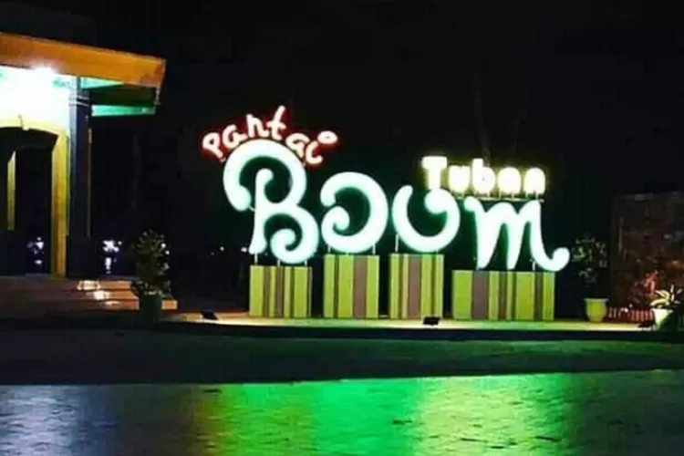

Deskripsi
Pantai Boom memiliki sejarah yang panjang. Dulunya kawasan pantai merupakan pelabuhan penting di masa Kerajaan Majapahit. Pelabuhan ini menjadi jalur utama dalam perlintasan, perdagangan, dan pelayaran kerajaan Singasari dan Majapahit. Tak heran di tempat tersebut banyak ditemukan peninggalan sejarah masa lalu seperti guci dan keramik kuno. Selain itu kehadiran sumur air tawar juga menjadi hal unik yang ada di sini.
Lokasi
Desa Purworejo, Kecamatan Jenu, Kabupaten Tuban
Harga tiket masuk
Weekday
Weekend
Fasilitas
- Tempat parkir
- Mushola
- Kamar mandi